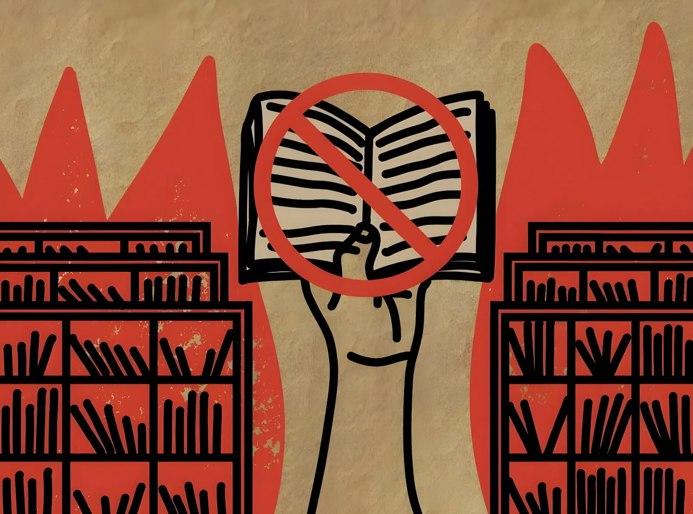

Fondée en 1922, PEN America est l'une des organisations les plus influentes du monde dans la défense de la liberté d'expression et des droits des écrivains. Depuis 2021, elle documente une vague sans précédent d'interdictions de livres dans les écoles publiques américaines et de censure des universités, une dynamique que l'administration Trump a encore accélérée dès son retour au pouvoir en janvier 2025. En avril 2025, son rapport phare qualifiait la situation d'« alarme à cinq sonnettes » pour la liberté d'expression aux États-Unis. Portrait d'une organisation en première ligne d'une bataille qui dépasse le monde des lettres.
PEN America est la branche américaine de PEN International, réseau mondial fondé à Londres en 1921 pour défendre les écrivains persécutés et la liberté d'expression à travers le monde. L'organisation américaine, créée en 1922 à New York, réunit aujourd'hui plusieurs milliers de membres — auteurs, journalistes, traducteurs, éditeurs — et dispose d'un bureau à Washington pour ses activités de plaidoyer.
Ses missions se déclinent sur plusieurs fronts : soutien aux écrivains emprisonnés ou menacés à l'étranger, défense de la liberté de la presse aux États-Unis, lutte contre la censure dans les écoles et universités, et promotion de la diversité littéraire. L'organisation publie régulièrement des rapports de référence qui font autorité dans le débat public américain.
En février 2026, PEN America a nommé Summer Lopez et Clarisse Rosaz Shariyf co-directrices générales, après une période de transition à la tête de l'organisation. À son assemblée générale de décembre 2025, le romancier Dinaw Mengestu a été élu président du conseil d'administration.
Depuis 2021, PEN America documente une explosion des interdictions de livres dans les écoles publiques américaines. Son bilan cumulé fait état de près de 23 000 cas recensés dans 45 États et 451 districts scolaires — un chiffre « sans précédent dans la vie de tout Américain vivant aujourd'hui », selon l'organisation.
Pour la seule année scolaire 2024-2025, 6 870 cas ont été enregistrés dans 23 États et 87 districts, portant sur 3 752 titres différents. La Floride concentrait le plus grand nombre de suppressions (2 304), suivie du Texas (1 781) et du Tennessee (1 622). Parmi les œuvres les plus touchées figurent des auteurs aussi reconnus que Toni Morrison, Margaret Atwood ou Judy Blume.
« Une "normalisation quotidienne" de la censure, inquiétante et croissante, s'est aggravée et étendue sur les quatre dernières années. Le résultat est sans précédent. »
— Kasey Meehan, directrice du programme Freedom to Read, PEN America, octobre 2025Le retour de Donald Trump à la Maison Blanche en janvier 2025 a représenté un tournant majeur selon PEN America. Pour la première fois, le gouvernement fédéral est devenu un acteur direct de la censure éducative — et non plus seulement un spectateur des dynamiques locales et étatiques. L'organisation a qualifié cette évolution d'« alarme à cinq sonnettes » dans son rapport de bilan des 100 premiers jours de l'administration, publié en avril 2025.
Parmi les mesures pointées par PEN America : le bannissement de plus de 350 mots et expressions dans les agences et documents fédéraux (incluant des termes liés au genre, à la diversité et au changement climatique) ; la prise de contrôle du Kennedy Center ; la censure des musées Smithsonian ; et le licenciement de la bibliothécaire du Congrès, la Dre Carla Hayden. Dès le 24 janvier 2025, le Département de l'éducation a classé onze plaintes relatives à des interdictions de livres comme une « imposture », supprimant par la même occasion le poste de coordinateur fédéral chargé de ce dossier.
Retour de Trump au pouvoir. Le Département de l'éducation classe les plaintes sur les interdictions de livres comme une « imposture » et supprime le poste de coordinateur dédié. Multiplication des ordres exécutifs bannissant des termes dans les documents fédéraux.
PEN America publie son rapport « A Five-Alarm Fire for Free Speech », dressant un bilan alarmant des 100 premiers jours de l'administration : plus de 350 mots bannis, prise de contrôle d'institutions culturelles, pression inédite sur les universités.
Publication du bilan annuel sur les interdictions de livres (2024-2025) : 6 870 cas dans 23 États. PEN America dénonce la « normalisation » de la censure et l'émergence du gouvernement fédéral comme nouveau vecteur de pression.
PEN America publie « America's Censored Campuses 2025 : Expanding the Web of Control », un rapport consacré à l'enseignement supérieur : 93 projets de loi de censure en 2025 dans 32 États, dont 21 promulgués, et cinq politiques administratives supplémentaires.
PEN America conduit une délégation d'auteurs à Texas A&M, aux côtés de 36 organisations partenaires, pour demander l'abrogation de deux politiques institutionnelles ayant conduit à la censure de cours entiers et à la fermeture du programme d'études de genre.
PEN America envoie une lettre signée par plus de 1 000 personnes au Conseil des régents de Texas A&M, dénonçant des restrictions ayant conduit jusqu'à la suppression de lectures de Platon dans certains cours.
Au-delà des écoles primaires et secondaires, PEN America a étendu son travail de documentation à l'enseignement supérieur. Son rapport de janvier 2026 dresse un tableau accablant : en 2025, 93 projets de loi de censure visant les universités ont été déposés dans 32 États, dont 21 ont été adoptés dans 15 États. Cinq politiques administratives supplémentaires ont également été mises en place par des responsables étatiques ou des conseils universitaires.
PEN America décrit deux formes de censure : directe (lois restreignant l'enseignement sur la race, le genre, l'histoire américaine ou les identités LGBTQ+) et indirecte (lois affaiblissant la gouvernance des facultés, fragilisant la tenure, ou démantelant les initiatives de diversité, d'équité et d'inclusion). L'organisation note que la précarisation des statuts universitaires — le taux de professeurs titulaires est passé de 53 % en 1987 à 32 % en 2021 — accroît la vulnérabilité des enseignants aux pressions politiques.
Pour PEN America, la censure des écoles et des universités n'est pas une question marginale : elle touche au cœur du fonctionnement d'une démocratie libérale. L'organisation souligne que les ouvrages et contenus visés reflètent avant tout des identités et des expériences minoritaires — et que leur suppression envoie un message puissant aux élèves sur leur place dans la société. Dans un contexte de polarisation politique extrême, l'action de PEN America illustre les tensions croissantes entre, d'un côté, des gouvernements qui invoquent les droits des parents et la « protection » des valeurs traditionnelles et, de l'autre, des organisations civiles qui y voient une offensive contre la liberté de penser, d'apprendre et d'enseigner.
Founded in 1922, PEN America is one of the world's most influential organisations defending free expression and the rights of writers. Since 2021, it has documented an unprecedented wave of book bans in American public schools and censorship of universities — a dynamic that the Trump administration sharply accelerated upon returning to power in January 2025. In April 2025, its flagship report described the situation as "a five-alarm fire" for free speech in the United States. A portrait of an organisation on the frontlines of a battle that extends far beyond the literary world.
PEN America is the U.S. branch of PEN International, a global network founded in London in 1921 to defend persecuted writers and free expression worldwide. The American organisation, established in New York in 1922, now brings together several thousand members — authors, journalists, translators, and publishers — and maintains a Washington office for its advocacy activities.
Its mission spans several fronts: supporting writers imprisoned or threatened abroad, defending press freedom within the United States, combating censorship in schools and universities, and promoting literary diversity. The organisation regularly publishes landmark reports that carry significant weight in American public debate.
In February 2026, PEN America appointed Summer Lopez and Clarisse Rosaz Shariyf as co-Chief Executive Officers, following a leadership transition. At its December 2025 annual general meeting, novelist Dinaw Mengestu was elected president of the board of directors.
Since 2021, PEN America has documented an explosion of book bans in American public schools. Its cumulative tally stands at nearly 23,000 cases across 45 states and 451 school districts — a figure "without precedent in the life of any living American," according to the organisation.
For the 2024–2025 school year alone, 6,870 cases were recorded across 23 states and 87 districts, covering 3,752 different titles. Florida had the highest number of removals (2,304), followed by Texas (1,781) and Tennessee (1,622). Among the most frequently targeted works are books by authors of the stature of Toni Morrison, Margaret Atwood, and Judy Blume.
"A disturbing 'everyday banning' and normalisation of censorship has worsened and spread over the last four years. The result is unprecedented."
— Kasey Meehan, Director of the Freedom to Read Programme, PEN America, October 2025Donald Trump's return to the White House in January 2025 marked a turning point, according to PEN America. For the first time, the federal government became a direct actor in educational censorship — no longer merely a bystander to local and state-level dynamics. The organisation described this shift as "a five-alarm fire" in its report on the administration's first 100 days, published in April 2025.
Among the measures highlighted by PEN America: the banning of more than 350 words and phrases across federal agencies and documents (including terms related to gender, diversity, and climate science); the takeover of the Kennedy Center; censorship at the Smithsonian museums; and the dismissal of the Librarian of Congress, Dr. Carla Hayden. As early as January 24, 2025, the Department of Education dismissed eleven complaints related to book bans as a "hoax," simultaneously eliminating the federal coordinator position overseeing this issue.
Trump returns to power. The Department of Education dismisses book ban complaints as a "hoax" and eliminates the dedicated coordinator role. A stream of executive orders bans terms from federal documents.
PEN America publishes "A Five-Alarm Fire for Free Speech," a damning review of the administration's first 100 days: 350+ words banned, takeover of cultural institutions, and unprecedented pressure on universities.
Annual book ban report (2024–2025): 6,870 cases in 23 states. PEN America denounces the "normalisation" of censorship and the emergence of the federal government as a new source of pressure.
PEN America publishes "America's Censored Campuses 2025: Expanding the Web of Control," focused on higher education: 93 censorship bills introduced in 32 states in 2025, with 21 enacted and five additional administrative policies.
PEN America leads a writer delegation to Texas A&M alongside 36 partner organisations, calling for the repeal of two institutional policies that led to the censorship of entire courses and the announced closure of the Women's & Gender Studies Programme.
PEN America sends a letter signed by over 1,000 individuals to the Texas A&M Board of Regents, denouncing restrictions that have led to the removal of readings from Plato in certain courses.
Beyond primary and secondary schools, PEN America has extended its documentation work to higher education. Its January 2026 report paints a bleak picture: in 2025, 93 censorship bills targeting universities were introduced in 32 states, with 21 enacted in 15 states. Five additional administrative policies were also put in place by state officials or university system boards.
PEN America identifies two forms of censorship: direct (laws restricting teaching on race, gender, American history, or LGBTQ+ identities) and indirect (laws weakening faculty governance, undermining tenure, or dismantling diversity, equity, and inclusion initiatives). The organisation notes that the growing precariousness of academic employment — the share of tenured faculty fell from 53% in 1987 to 32% in 2021 — increases instructors' vulnerability to political pressure.
For PEN America, the censorship of schools and universities is not a marginal issue: it strikes at the heart of how a liberal democracy functions. The organisation emphasises that the books and content being removed disproportionately reflect the identities and experiences of minority communities — and that their suppression sends a powerful message to students about their place in society. Against a backdrop of extreme political polarisation, PEN America's work illustrates the growing tensions between governments invoking parental rights and the defence of traditional values on one side, and civil society organisations that view these moves as an assault on the freedom to think, learn, and teach on the other.